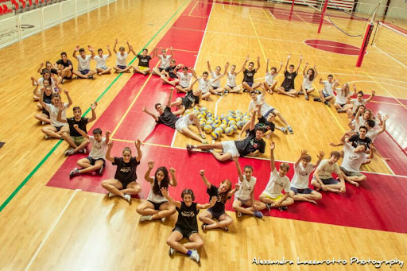
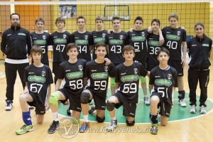
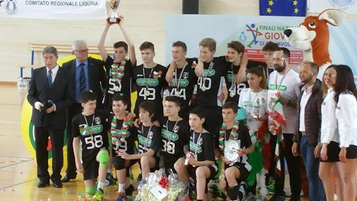
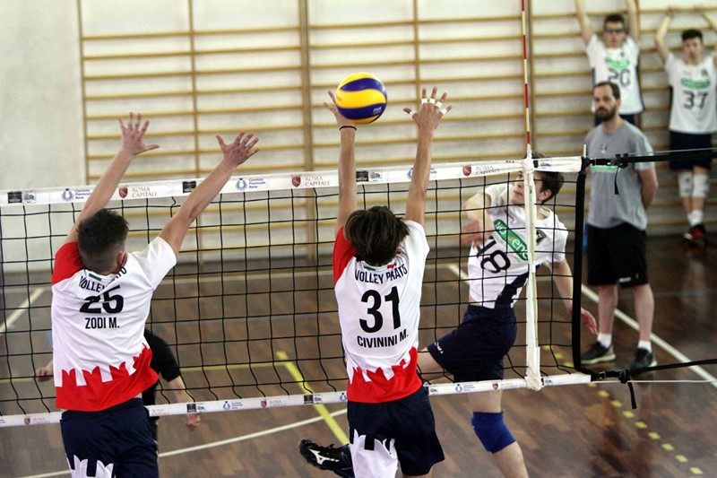
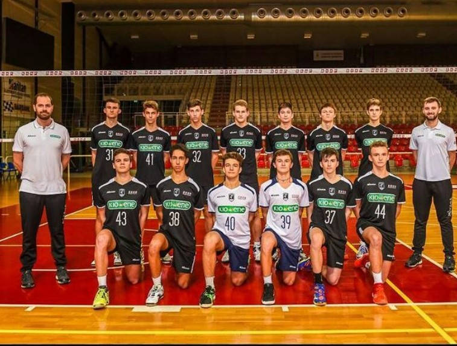
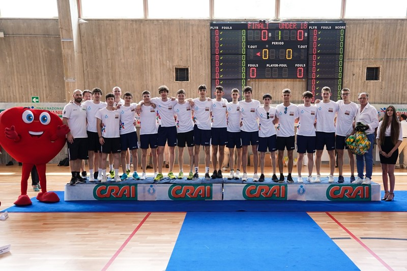
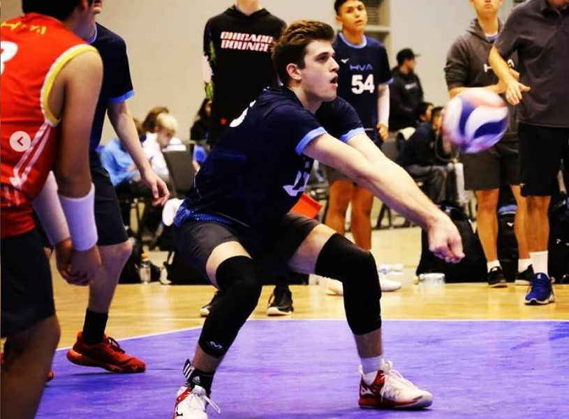
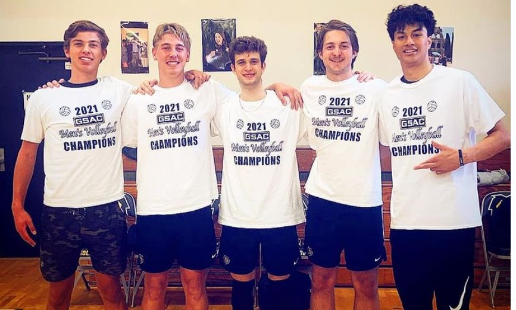
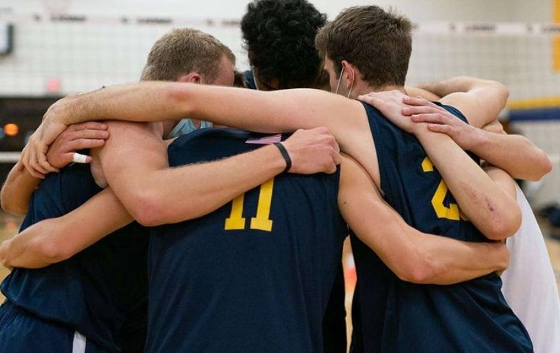
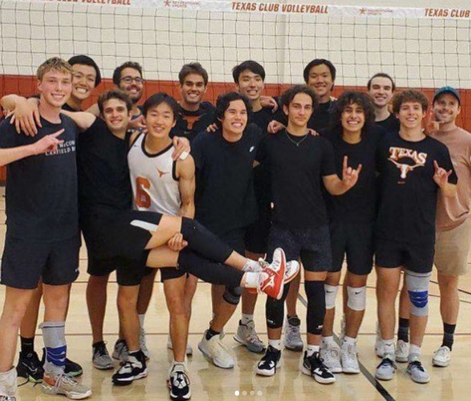

When I started playing:Before playing volleyball I played a lot of sports, looking for the one that I liked the most.
|
 |
|  |
U 13:
This was my first year playing volleyball, and I didn't know this, but I joined one of the best
teams in Italy, and I didn't get to play a lot. I only got to play when we were up by a lot of
|
U 14:
This year our team was even better, but since we still had the same team we were even better.
|
 |
|  |
U 16 first year:This year we had to play with also guys one year older than us becuse U15 doesn't exist in Italy. I got a lot better during this year, and I got a lot more playing time during this year, I also got to play a lot during nationals. Unfortunately, we didn't play good in the quarter finals. We underestimated the team too much, to they point of losing against them. After that game we were depressed and didn't play good at all for the rest of the nationals, ending up finishing 8th in the nation. Even if that is not what we wanted, we still got a really good result! |
U 16 second year:We didn't play really good this year, we didn't qualify for nationals so we didn't get |
 |
|  |
U 18 first year:
This was one of my favorite years, for the first half of the season I didn't get |
Senior year in high school: When I moved to the US I had to change team and I joined a team called HVA. |
 |
|  |
First year at Vanguard:
Now I am at Vanguard, here I competed at a really high level volleyball, I didn't know
|
Second year at Vanguard: For my second year at Vanguard we had some new players coming in, but we didn't |
 |
|  |
First year at UT Austin:
This year I started playing for the men's volleyball club at UT, and
the level of competition I was used to is not the
|